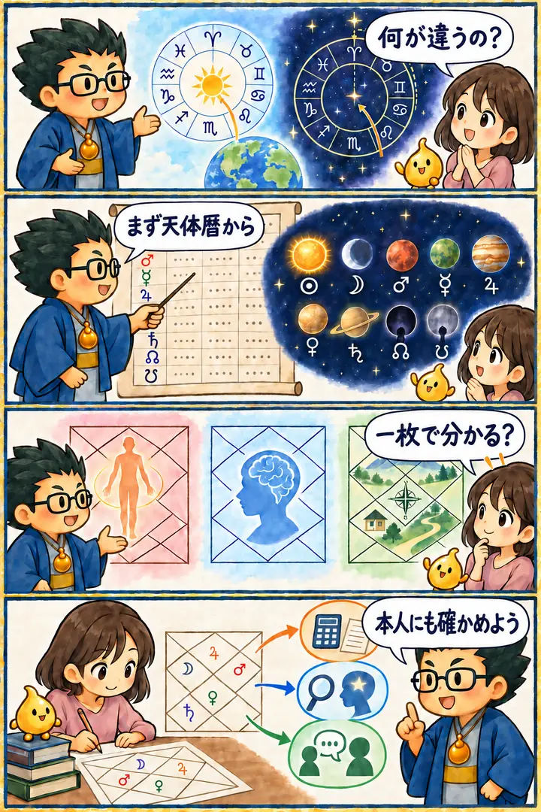

第2期 Zoom講座・第2回
インド占星術の基礎
この回の要約
インド占星術の暦・天体・ハウスを、他の占術と比べながら学ぶ基礎回です。計算結果を鵜呑みにせず、構造から読みます。
インド占星術は、星座・惑星・ハウス・時期を組み合わせて読む体系です。
西洋占星術との違いを知り、同じ言葉でも計算方法や前提が違うことを確認します。
計算結果は答えではなく、本人の経験を聞くための地図として使います。
4コマ漫画でつかむ

タイムスタンプ
時間を押すと、上の動画がその場面から再生されます。
覚えておきたいこと
- 天体暦天体の位置を確認する基礎資料
- 九つの惑星働きの違いを役割として捉える
- 十二ハウス人生のどの領域に現れるかを見る
- 複数のチャート一枚だけで断定せず、異なる角度から確認する
- 時期傾向が強まりやすい時期を検討する
復習ポイント
講義内の占術上の説明・時代の読み・象徴的な解釈は、講師の見立てです。客観的な事実や将来を保証するものではありません。